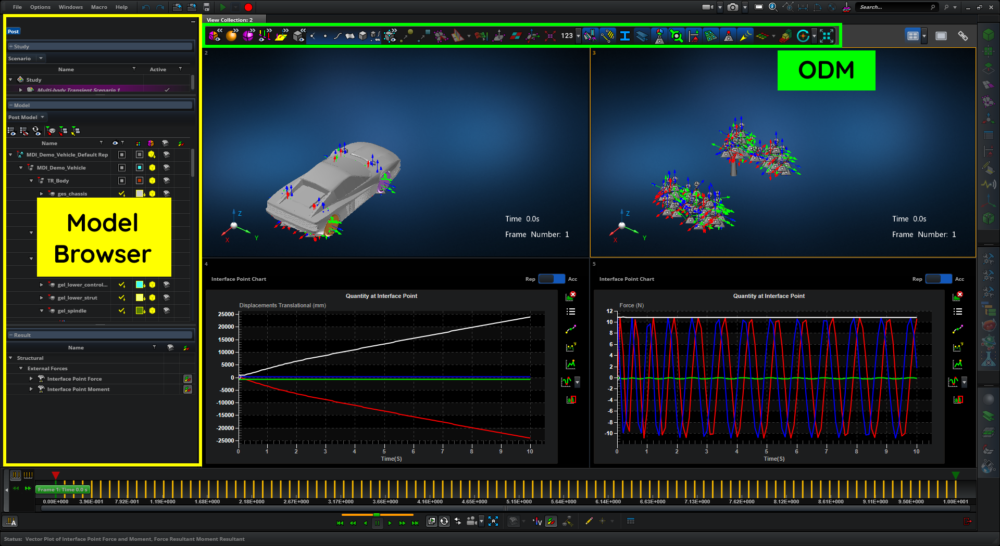
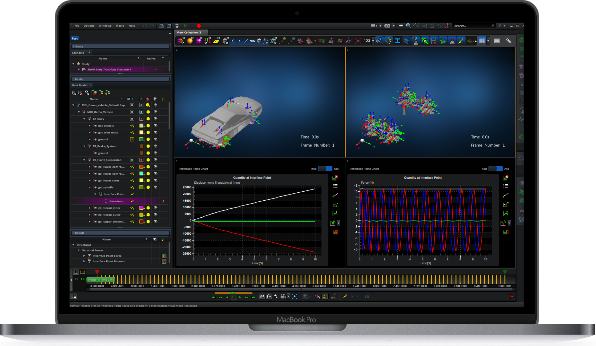
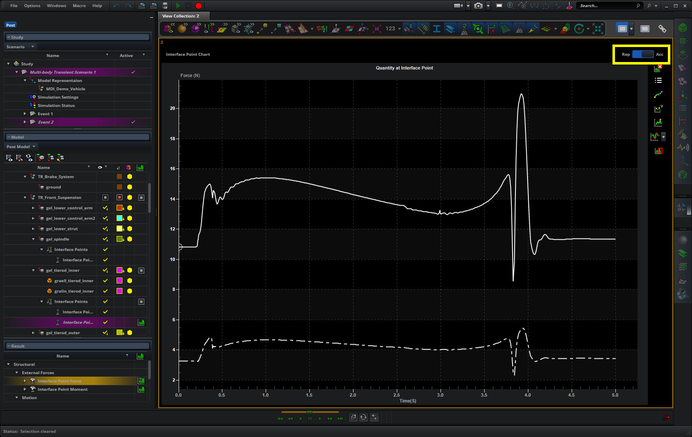
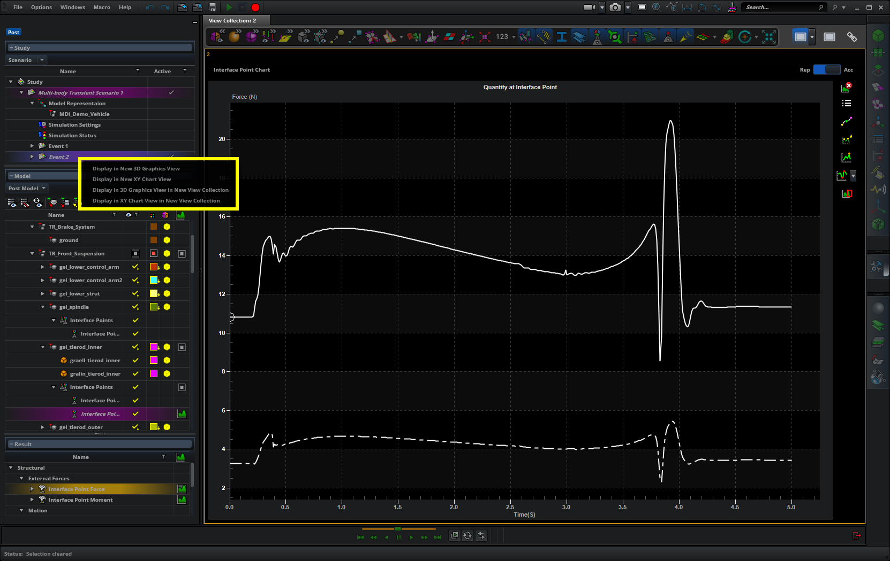
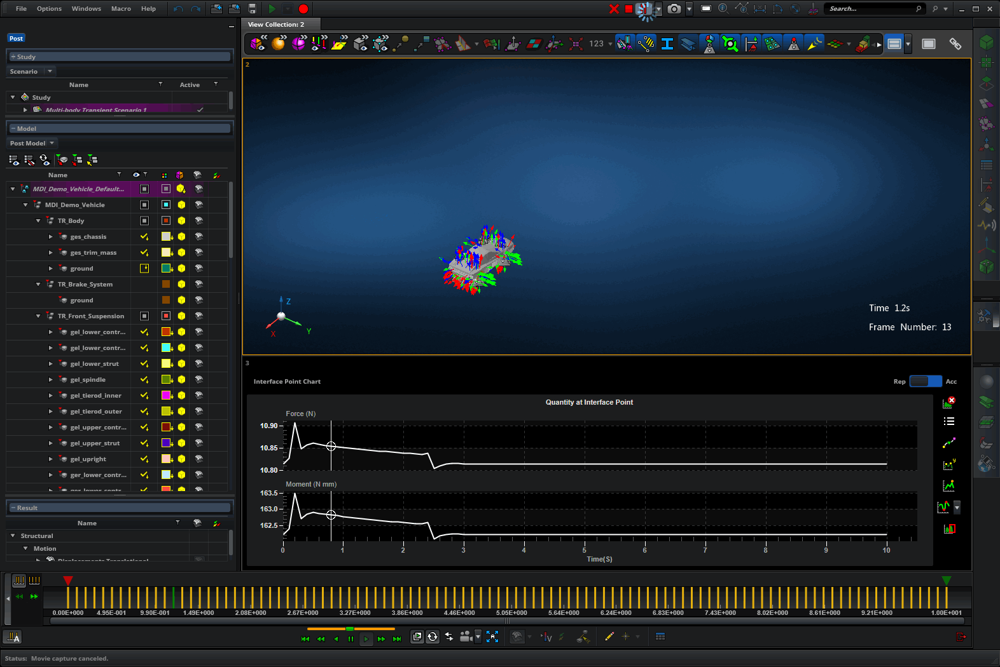
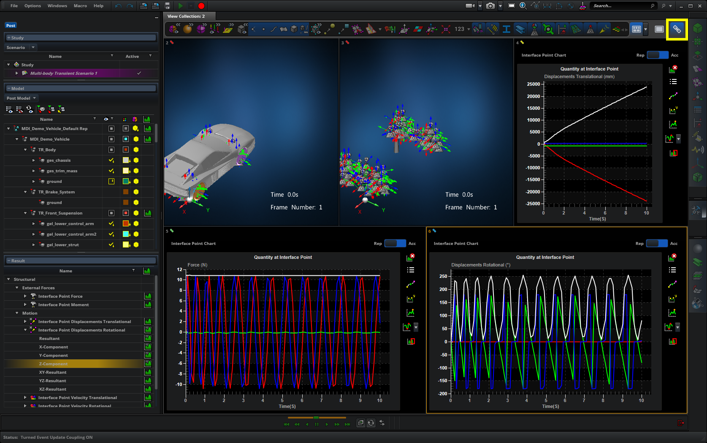
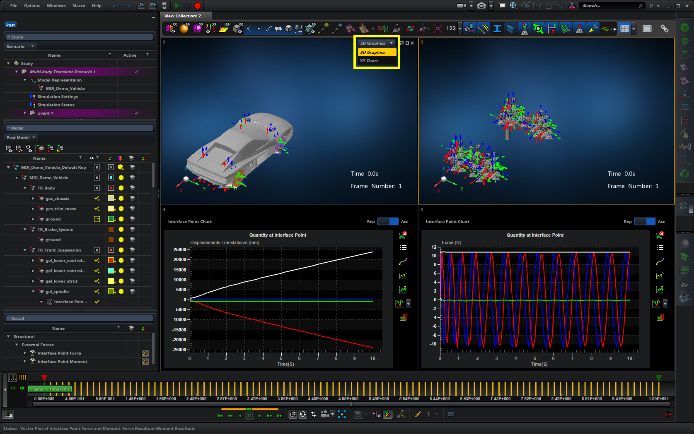
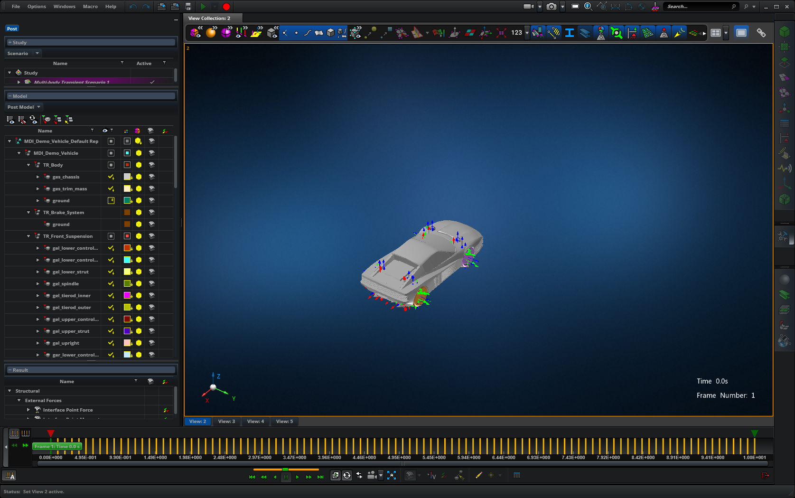
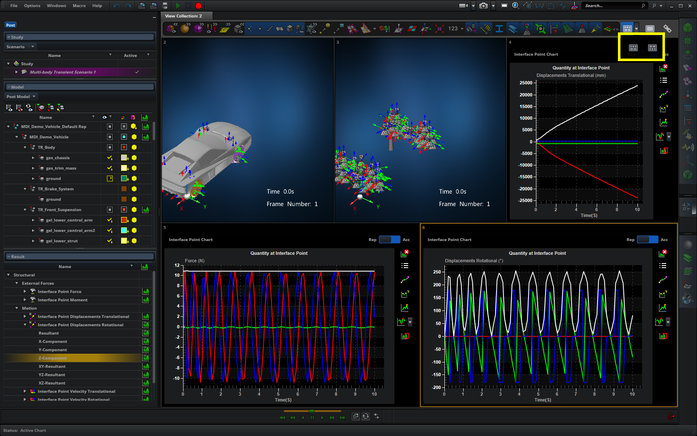
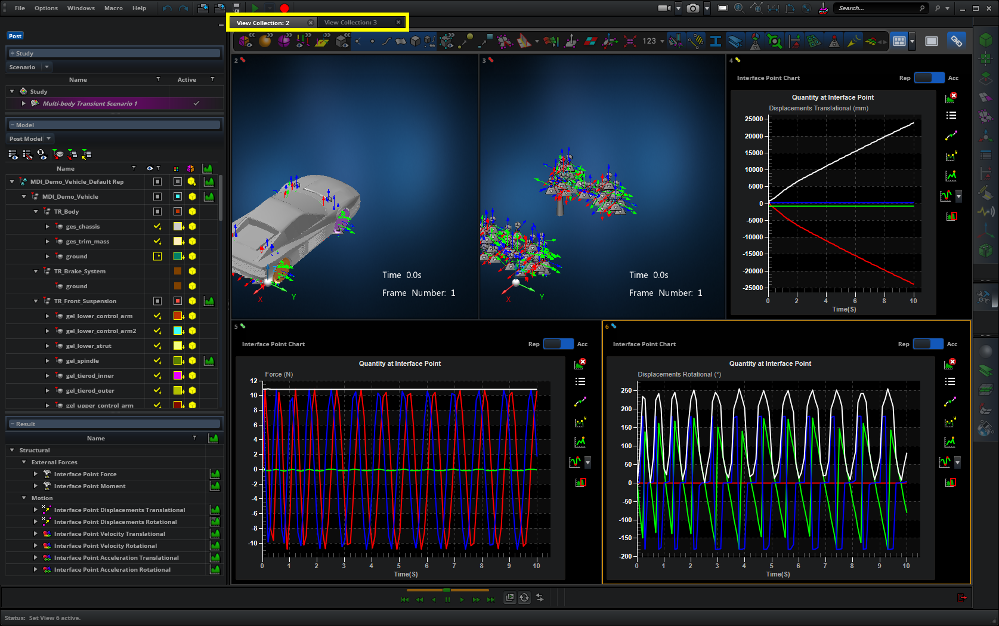

Overview
It is a common workflow of an FEA engineer to simultaneously examine and analyze multiple simulation results, which arise from different simulation settings. This allows her to be able to compare results, spot anomalies, and identify the most optimal settings for the simulation.
The multiple viewport capability in Apex enables aerospace and automotive engineers to create multiple viewports with different result plots across multiple simulation scenarios, allowing them to compare and analyze data efficiently and easily.
Problem
Apex’s single viewport was not sufficient for engineers to compare different load cases and simulation result plots. In order to work around this, the user had to frequently toggle the visible load case and simulation result plot in a single viewport, which was inefficient and made comparing detailed data almost impossible.
Roles and Responsibilities
As the sole UI/UX designer of this project, I worked closely with the customer (Honda) to understand the driving use cases, created high fidelity mockups and clickable prototypes, met with Honda weekly to get feedback on the design and to update the design iteratively, and worked closely with the development team to complete this high priority project successfully and on time.
Process

Research
Gather use cases from the customer and understand the workflow

Ideation with the team
Compare different design ideas and identify pros and cons of each idea

Design
Create mockups and clickable prototype

Customer feedback
Share design with customers and get feedback through discussions

Iterate
Based on customer feedback, update the design and get feedback (repeat as necessary)

Design specification
Document design details, define performance expectations, and provide assets

Conceptualize with development teams
Review the design specification with development teams and identify/address constraints

Support development
Provide clarifications to development teams until implementation is complete
Driving Use Cases
Based on the initial meetings with Honda, I identified the following driving use cases for this project:
- Compare load quantity time histories from multiple interface points arising from multiple events in a single XY Chart.
- Compare load quantity time histories from multiple interface points arising from a single or multiple events in multiple XY Charts alongside a 3D State Plot displaying a transient animation of the full system. At a given time, compare up to 9 different plots or charts.
- Visualize time based synchronization between State Plots and XY Charts.
- Change the active event in a view and observe all coupled viewports update.
Brainstorming
Many FEA softwares already provided the ability to create multiple viewports. I looked at some MSC products as well as our competitors.
The Model Browser (see image below) displays detailed information about the model in the 3D graphics viewport. When extending Apex to support multiple viewports, each viewport must have its own Model Browser since what is displayed in each viewport can be different. So I came up with the idea of an ‘active viewport’. When a viewport is active, the Model Browser on the lefthand side would display the information about the model, result plot, etc. that is in the active viewport. This prevents the UI from becoming more complex, and it helps the user focus on one viewport at a time.
This idea of an ‘active viewport’ played nicely with the rest of the UI. For example, instead of displaying the ODM (Object Display Manipulator) in each 3D graphics viewport, I would be able to display a single ODM, which corresponds to the active viewport.
There were two ideas about how the user would create a new viewport. In post-processing, there is an implementation limitation, where a viewport cannot be empty (i.e. must display a result plot).
Option 1:
User creates a new viewport by clicking an "Add new viewport" button. For example, if there are 2 viewports, and the user wants to create a third one, then the user would click the button, which would change the layout from 2-up to 3-up.
Although the idea of creating a viewport by clicking a button sounded like a good idea, it was not clear what the new viewport would display. Would it display the same result data as the last viewport? Or would it display the same result data as the active viewport?
When I discussed this with different customers and field experts, the opinion was split - some said it should display what was in the last viewport, whereas others said it should display what was in the active viewport.
Option 2:
User identifies upfront what result data to display in the new viewport.
In the Model Browser, the user defines the result data by selecting the corresponding row, right-clicking, and selecting the "Display in new Viewport" option. Since this information is defined upfront, when the new viewport gets created, it knows what to display.
Although this is not as discoverable as Option 1, it works around the implementation limitation of not being able to display empty viewports, and our users are also very familiar with using right-click context menus for various common operations.
Option 2 aligned better with Honda’s workflow, and it was suitable for the minimum viable solution, so I went with this option. I discussed plans to make the viewport creation workflow more discoverable, and it has been scheduled for a future release.
UI Design
I try to create high-fidelity mockups and clickable prototypes pretty early in my design phase because:
- It helps to clearly communicate the design ideas with customers and other stakeholders. I noticed that the audience struggles to understand the design ideas or loses focus when designers use low-fidelity mockups or sketches.
- Apex has a list of design paradigms and patterns that all of the designers try to adhere to.
Below are some of the high-fidelity mockups that I used during meetings with Honda to demonstrate what multiple viewport capability would look like in Apex.
Clickable Prototype
Next, I created clickable prototype to demonstrate how the multiple viewport capability in Apex can support Honda’s use cases and workflow.
I iterated on the design and the prototype based on the feedback from Honda. These were some of their feedback:
- In complex models, they need the ability to view more than 400 different result plots and charts.
- They need the ability to focus on a single plot or chart.
- Given that viewports cannot be moved around (this was due to our resource limitation that we identified prior to our initial meeting with Honda), they want the ability to toggle between 3D graphics mode and XY Chart mode within a single viewport.
- They want to be able to change the viewport layout based on the model shape and the curve shape in the chart.
After many iteration, we were able to come to an agreement on the final design.
Solution
The solution we decided to implement gives users the ability to create multiple viewports in post-processing, where the user can view and compare multiple result data. Each viewport will support either a 3D graphics view, which is useful for viewing the model and result plots, or an XY chart view, which is useful for spotting oddities based on the shape of the graph.
User can play synchronous animations across multiple viewports and observe how the model in the 3D graphics viewport behaves at peaks and valleys in the XY chart viewport.
Below are some of the key features in the design that address the driving use cases and Honda’s feedback.
KEY FEATURE 1 - Add curves from multiple events in a single XY Chart
Previously, in an XY Chart, the user was only able to add curves that arose from a single event. This restriction was removed, and the user is now able to add curves from multiple events into a single XY Chart.
There are two modes for adding curves (highlighted in the image above):
- ‘Replace’ mode
- This was the only mode that was previously supported. Whenever the user creates a new curve, it would replace the existing one. This is useful for quickly visualizing a curve from the result data without cluttering the XY Chart.
- ‘Accumulate’ mode
- This is a new mode that I added. Typically, a user would create a curve from the result data from one event, then add another curve from the result data from another event. With the ‘Replace’ mode, the first curve would be replaced by the second curve, whereas with the ‘Accumulate’ mode, both curves will be shown, allowing users to ‘accumulate’ curves from different events.
KEY FEATURE 2 - Display result data in a 3D graphics or XY Chart viewport
The user can display the result data either in a 3D graphics viewport or an XY Chart viewport by right-clicking on an event and selecting an option.
When the user selects an option, the system creates a new viewport that displays the result data.
KEY FEATURE 3 - Synchronized animation
The user can play animation across multiple viewports. The animation is time-synchronized. This allows the user to observe how the model behaves at spots that standout (e.g. dips or pointy parts in the chart).
KEY FEATURE 4 - Couple viewports
The user can turn coupling ON or OFF. When coupling is on, viewports that are displaying the result data from the same event are considered coupled and will have the same colored icon. When the user changes the result data being displayed in one of the coupled viewports, it will be updated in all of the coupled viewports. If coupling is turned OFF, then changing the result data will only affect the active viewport.
KEY FEATURE 5 - Toggle viewport type
For each viewport, the user can choose to display the 3D graphics view or chart view of the result data.
KEY FEATURE 6 - Maximize a viewport
The user can maximize a single viewport to isolate and focus on a particular result plot.
KEY FEATURE 7 - Change viewport layout
The user can change the viewport layout (e.g. 3 views on top, 2 views on the bottom; 2 views on top, 3 views on the bottom) and resize viewports.
KEY FEATURE 8 - Create multiple collections of viewports
The user can create multiple viewport collections, which can hold up to 9 viewports. A typical workflow would be displaying different types of simulation in each viewport collection.
Challenges
Defining the minimum viable set of features
- Apex supports both pre-processing and post-processing. Due to resource constraints, we were limited to implementing this feature in post-processing only.
- Supporting persistence and retrieval of the multiple viewport data as well as transitioning between a single viewport in pre-processing and multiple viewports in post-processing were challenging for the team.
Working with a third party vendor for charting view
- Apex utilizes a third-party vendor to implement the charting capabilities. It was important to test the existing capabilities that the third-party vendor provides and to identify any missing features that we needed.
- This meant some of the developers’ time was spent communicating design ideas with the third-party vendor.
Outcomes And Impacts
The multiple viewport capability is used by all of Apex’s customers. It has increased the usability in post-processing considerably by allowing users to easily compare result plots side by side, saving a significant amount of time in their workflow. An Application Engineer reported feedback from a user that this feature has saved them about 100 hours in each project.
Additionally, supporting the multiple viewport capabilities in Apex helped us extend our contract with Honda.